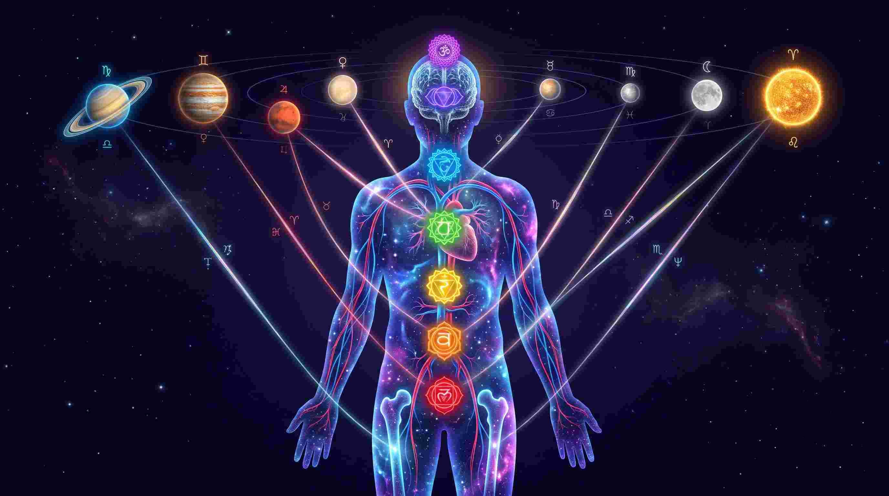
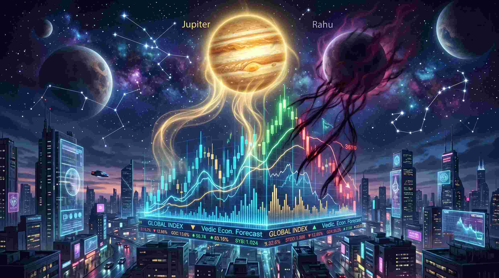
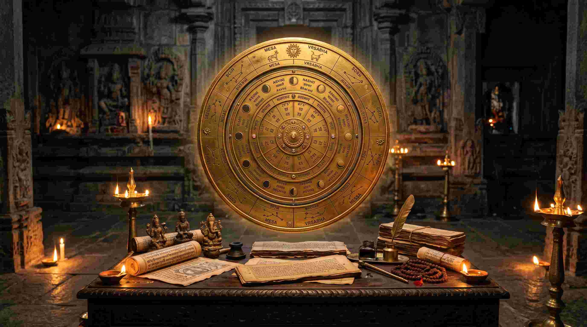

ज्योतिष शास्त्र में ग्रहों की चाल (Transits) का विशेष महत्व है। ग्रहों की गति और उनकी स्थिति में परिवर्तन मनुष्य के जीवन पर गहरा प्रभाव डालते हैं। क्या आपने कभी सोचा है कि एक दिन सब कुछ बिल्कुल सही चल रहा होता है, और अगले ही दिन अचानक से तनाव, वाद-विवाद या आर्थिक नुकसान शुरू हो जाता है? यह सब कुछ ग्रहों के गोचर (Planetary Transits) का परिणाम है।
आज इस विस्तृत लेख में, हम न केवल सामान्य गोचर की बात करेंगे, बल्कि मेडिकल एस्ट्रोलॉजी (Medical Astrology) और मुंडेन एस्ट्रोलॉजी (Mundane Astrology) के उन गहरे रहस्यों से भी पर्दा उठाएंगे जो आपको शायद ही कहीं और पढ़ने को मिलें। आपकी जन्म कुंडली एक 'पार्किंग लॉट' की तरह है जहाँ ग्रह आपके जन्म के समय खड़े थे, लेकिन 'गोचर' वह ट्रैफ़िक है जो आज सड़क पर चल रहा है। दोनों का टकराव ही आपके जीवन की घटनाएं तय करता है।
"जन्म कुंडली आपका 'प्रारब्ध' (Past Karma) है, जबकि गोचर उस प्रारब्ध के ट्रिगर होने का 'समय' (Timing) है। बिना गोचर को समझे भविष्यवाणियां करना असंभव है।"
ग्रहों की चाल और मानव शरीर: मेडिकल एस्ट्रोलॉजी (Medical Astrology)
एक मेडिकल छात्र और ज्योतिषी होने के नाते, मैंने हमेशा मानव शरीर की कार्यप्रणाली (Anatomy and Physiology) और ग्रहों के बीच एक गहरा संबंध देखा है। जब कोई पाप ग्रह (Malefic Planet) गोचर में किसी विशेष भाव से गुजरता है, तो वह केवल बाहरी जीवन को नहीं, बल्कि हमारे शरीर के अंगों की पैथोलॉजी (Pathology) को भी प्रभावित करता है।

शारीरिक संरचना पर ग्रहों का गोचर:
- सूर्य (Sun) - हृदय और हड्डियां: सूर्य एक महीने में एक राशि में रहता है और पूरे राशि चक्र को 12 महीनों में पूरा करता है। सूर्य की चाल व्यक्ति के आत्मविश्वास, सत्ता और प्रतिष्ठा को प्रभावित करती है[cite: 10]। जब सूर्य राहु या शनि के गोचर से पीड़ित होता है, तो हृदय रोग (Cardiovascular issues), हड्डियों में दर्द, और विटामिन्स की कमी देखने को मिलती है।
- चंद्रमा (Moon) - मन और शारीरिक तरल पदार्थ: चंद्रमा लगभग 2.5 दिनों में एक राशि बदलता है और पूरे राशि चक्र को 28 दिनों में पूरा करता है। यह मन, भावनाओं और daily life को प्रभावित करती है[cite: 10]। हमारे शरीर में मौजूद 70% जल तत्व और रक्तचाप (Blood Pressure) चंद्रमा के गोचर के अनुसार ही घटता-बढ़ता है।
- मंगल (Mars) - ऊर्जा और रक्त: मंगल की चाल energy, courage और competition को प्रभावित करती है। जब मंगल का गोचर खराब होता है, तो यह बुखार, सूजन (Inflammation), और सर्जरी (Surgery) का कारण बनता है।
- बुध (Mercury) - नर्वस सिस्टम: बुध की चाल communication, business और intelligence को प्रभावित करती है। जब बुध वक्री (Retrograde) होता है, तो चिंता (Anxiety) और नर्वस सिस्टम की समस्याएं बढ़ जाती हैं।
मुंडेन एस्ट्रोलॉजी: शेयर बाजार और वैश्विक अर्थव्यवस्था पर गोचर का प्रभाव
गोचर केवल एक व्यक्ति को नहीं, बल्कि पूरी दुनिया को प्रभावित करता है। इसे 'मुंडेन एस्ट्रोलॉजी' कहा जाता है। आधुनिक समय में, जो लोग यूरोपियन ईवी मार्केट्स (European EV markets), स्टॉक ट्रेडिंग या वित्तीय प्लेटफॉर्म्स (जैसे Trade Republic या Scalable Capital) में निवेश करते हैं, उनके लिए राहु, गुरु और शनि का गोचर वरदान या अभिशाप साबित हो सकता है।

- बृहस्पति (गुरु) का गोचर: गुरु (बृहस्पति) लगभग एक साल में एक राशि में रहता है और पूरे राशि चक्र को 12 साल में पूरा करता है। गुरु की चाल wisdom, expansion और prosperity को प्रभावित करती है। जब गुरु का गोचर किसी देश की कुंडली के द्वितीय (धन) या एकादश (लाभ) भाव से होता है, तो वहां का शेयर बाजार नई ऊंचाइयों को छूता है।
- राहु और केतु का मायाजाल: राहु और केतु छाया ग्रह हैं जो हमेशा विपरीत दिशा में चलते हैं। ये लगभग 1.5 साल में एक राशि में रहते हैं और पूरे राशि चक्र को 18 साल में पूरा करते हैं। राहु और केतु की चाल unexpected events और karmic lessons को प्रभावित करती है। राहु जब मजबूत होता है तो यह आर्टिफिशियल इंटेलिजेंस (AI), टेक्नोलॉजी और इलेक्ट्रिक व्हीकल (EV) जैसे सेक्टर्स में अचानक बूम लाता है।
- शनि (Saturn) का गोचर: शनि लगभग 2.5 साल में एक राशि में रहता है और पूरे राशि चक्र को 30 साल में पूरा करता है। शनि की चाल discipline, hard work और challenges को प्रभावित करती है। शनि का गोचर जब खराब होता है, तो यह वैश्विक मंदी (Recession) और रियल एस्टेट मार्केट में गिरावट लाता है।
ग्रहों की चाल का विश्लेषण कैसे करें? (Advanced Techniques)
ग्रहों की चाल का विश्लेषण करने के लिए निम्नलिखित बातों पर ध्यान देना चाहिए:
- वर्तमान में ग्रह किस राशि में हैं।
- ग्रह की चाल जन्म कुंडली के साथ कैसा relationship बना रही है।
- ग्रह की दशा और अंतर्दशा क्या चल रही है।
- ग्रहों की आपसी aspects (दृष्टियां) और conjunctions (युति)।
- ग्रहों की retrogression (वक्री) की स्थिति।

अष्टकवर्ग (Ashtakvarga) और सुदर्शन चक्र: गोचर की सूक्ष्म जाँच
पारंपरिक वैदिक ज्योतिष में, गोचर को केवल लग्न या चंद्र राशि से देखना आधा सच है। सटीकता के लिए अष्टकवर्ग (Ashtakvarga) प्रणाली का उपयोग किया जाता है। अष्टकवर्ग में प्रत्येक भाव को कुछ 'बिंदु' (Points) दिए जाते हैं। यदि गुरु किसी ऐसे भाव से गोचर कर रहा है जहाँ अष्टकवर्ग में 28 से कम बिंदु हैं, तो गुरु शुभ होते हुए भी उस गोचर में फल नहीं दे पाएगा।
इसी तरह सुदर्शन चक्र (Sudarshan Chakra) पद्धति में लग्न, चंद्र और सूर्य तीनों को एक साथ रखकर गोचर का प्रभाव देखा जाता है। जब कोई पाप ग्रह इन तीनों के ऊपर से एक साथ गुजरता है, तभी जीवन में बड़ी दुर्घटनाएं या महा-संकट आते हैं। यदि आप ज्योतिष की गहराई को समझना चाहते हैं, तो इन प्रणालियों को नजरअंदाज नहीं किया जा सकता।
ग्रहों की वक्री चाल (Retrogression)
जब कोई ग्रह पीछे की ओर चलता हुआ प्रतीत होता है, तो उसे वक्री चाल कहते हैं। वक्री ग्रह का प्रभाव अलग होता है और यह अक्सर internal processes और past karmas को activate करता है[cite: 10]। जब कोई ग्रह वक्री होता है, तो उसकी चेष्टा बल (Chesta Bala) बढ़ जाती है। इसका मतलब है कि वह ग्रह आपको पिछले जन्मों के अधूरे कार्यों को पूरा करने के लिए मजबूर करेगा।
निष्कर्ष
ग्रहों की चाल का अध्ययन करके हम अपने जीवन में आने वाले changes को समझ सकते हैं और उनके अनुसार तैयारी कर सकते हैं। याद रखें, ग्रहों की चाल केवल tendencies create करती है, और हमारे karma और efforts final outcome determine करते हैं।
चाहे आप शेयर बाजार में निवेश कर रहे हों, मेडिकल क्षेत्र में काम कर रहे हों, या कोई नया YouTube चैनल शुरू कर रहे हों, यदि आप उस समय के 'गोचर' को अपनी 'दशा' के साथ संरेखित (Align) कर लेते हैं, तो सफलता निश्चित है। ब्रह्मांड एक घड़ी की तरह काम कर रहा है, आपको बस इसके गियर को समझना है!